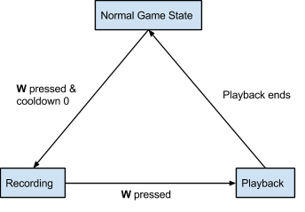

Time Reversal
The Theory
Our game has a mechanic where the player is able to stop time, record movements, and go back in time, such that there are two players running around and performing actions. I'll explain in detail how this problem is solved. First, refer to this state diagram which shows how to transition between each game state:

And to make sure we're only doing stuff of a particular game state, we only call one of them at a time.
void FixedUpdate()
{
switch (operation_mode)
{
case 0:
NormalUpdate();
break;
case 1:
Record();
break;
case 2:
Rewind();
break;
case 3:
Playback();
break;
}
}
By the way, if you're making a game, it's a good idea to know about your game states. It gives you a clearer picture of how your game works
How to rewind time
I thought this problem over for a day or two, and came up with 3 basic facts:
- Since we have to know everything about that time we jump back to, there is no choice but to save information about that time.
- Information about a certain time is only created and destroyed, so that information should never change once it's made.
- We have to condense our information of each frame in the smallest form possible, because there will be a lot of it.
Before we begin, you should know about structs and arrays.
The struct
Suppose we wanted to have information about a character at a particular moment. Here's the information we would need:
- Vector Position
- Animation State
- Event State
Vector Position
We need the object's position so we can reproduce a scenario accurately during playback. We could read the object's velocities and try to interpolate the object's future position, but we decide not to in the fear of running into problems when stuff starts colliding with one another. Physics computation is a precious thing, and if we already computed something, we don't want to compute it again. So because of this, copying the position is enough, and we relinquish the object's physics characteristics during playback.
Animation State
To reproduce a scenario accurately, we'll also need an animation state. Each character has a set of images for animations such as running or attacking. Since the selection of images are stored in arrays, we'll only need to keep track of what index of an animation a particular frame has.
Event State
Now, in our game, the purpose of time travel is to do nifty things like preemptively switching buttons on or off for use during playback. We will need to have an event state for a button to know whether it was on or off at a certain time.
The array
To store our information, we use an array, since it guarantees that our memory is grouped up for easy access. When we record, we'll continuously put the current frame's data into that array, and we read it when we enter playback. Arrays are pretty handy and allow us to achieve what we want in an efficient manner.
Now, I know that Unity's Update() function isn't called at a constant rate. Sometimes, you'll have more frames per second when your computer can afford it. Sometimes, when your computer is performing heavy computation, you'll have less frames per second. I did a little research and found that Unity actually has another update function called FixedUpdate(), which is called at a constant rate at all times. Since we want our recorded data to have consistent timing, we choose to use FixedUpdate().